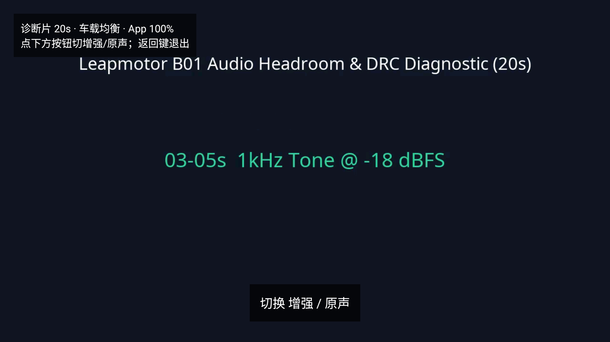

已验证，等待主备发布回读。
输出天花板 -6.0 dBFS（0.501187），DRC 逐采样限幅 80 ms 释放，删除 10 ms 块边界阶跃覆盖。
车载均衡实测：轻声段增益约 1.40，高潮段回落到约 0.32，输出峰值 0.2733，未触天花板。
APK SHA-256：57174374e823543c2bd5091cf3fbf23bef003f22228c2829ed3fb2522fbb064a
设置 → 高级设置 → 播放与声音 内有临时入口「音量测试片（临时）」，播放页按钮可即时切换增强/原声。
